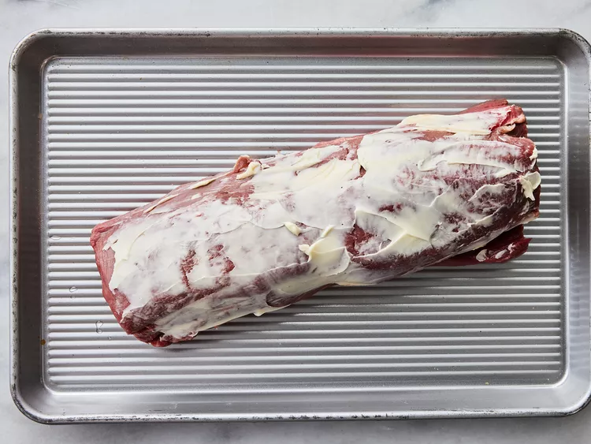
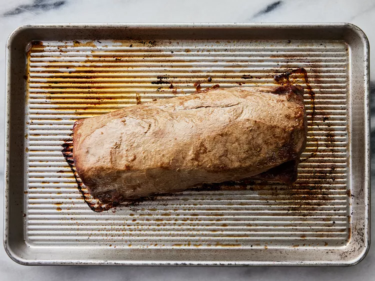
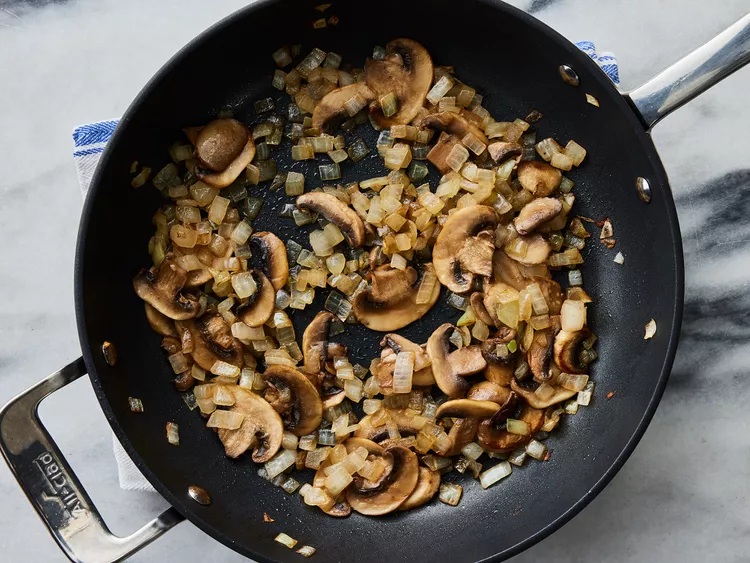
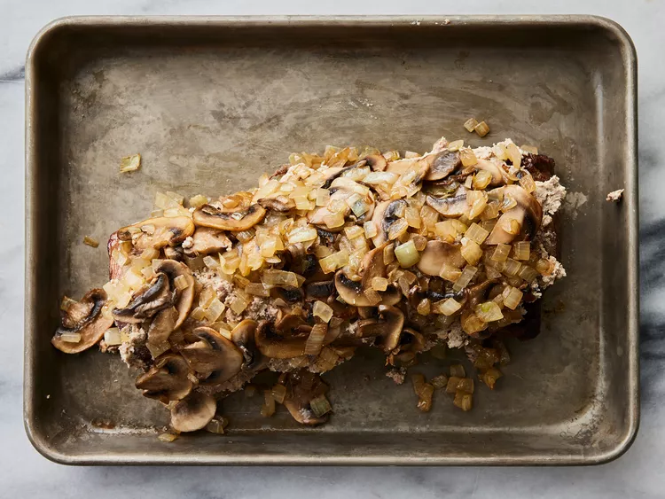
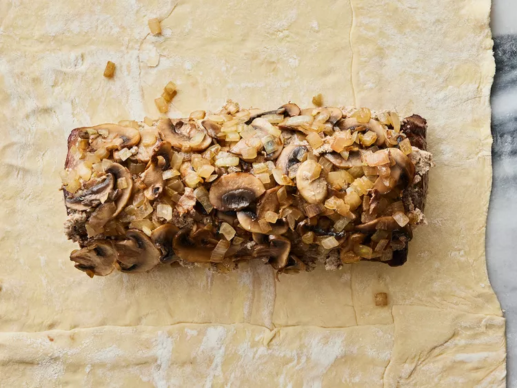
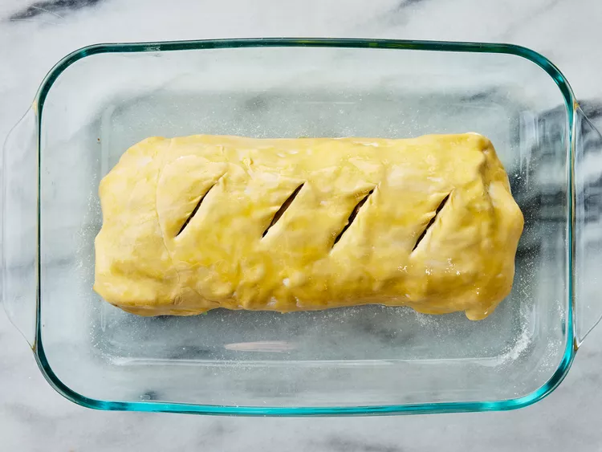
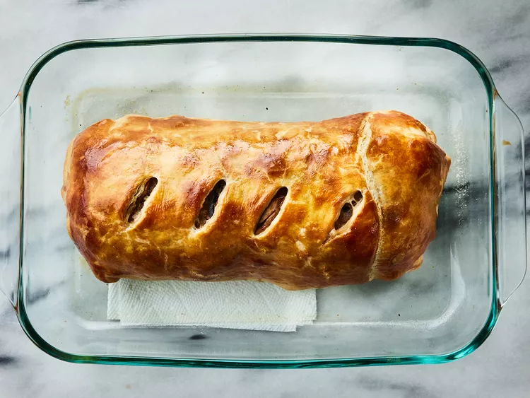
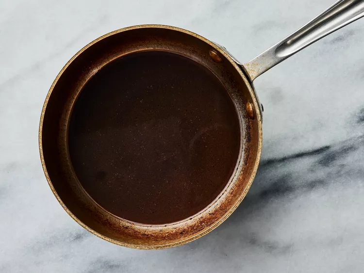

Beef Wellington is a luxurious main dish made with beef tenderloin coated with paté and mushrooms, wrapped in puff pastry, and baked until the pastry is a beautiful golden brown. The classic English dish is named after Arthur Wellesley, 1st Duke of Wellington.
Beef Wellington pairs well with potatoes, such as Oven-Roasted Potatoes or Basic Mashed Potatoes. A nice side salad is a great way to add a welcome pop of color to your plate.
Store your leftover Beef Wellington in an airtight container in the refrigerator for up to four days or freeze it for up to three months.
You’ll find the full, step-by-step recipe below – but here’s a brief overview of what you can expect when you make this beef Wellington:
Prep Time: 30 mins
Cook Time: 40 mins
Total Time: 1 hr 10 mins
Servings: 8
Preheat the oven to 425 degrees F (220 degrees C).
Place beef tenderloin in a baking dish. Spread 2 tablespoons softened butter over beef.
Bake in the preheated oven until browned, 10 to 15 minutes. Remove beef from the pan and reserve pan juices; allow beef to cool completely.
Increase oven temperature to 450 degrees F (230 degrees C).
Melt 2 tablespoons butter in a skillet over medium heat. Sauté onion and mushrooms in butter for 5 minutes. Remove from heat and let cool.
Mix paté and remaining 2 tablespoons softened butter together in a bowl; season with salt and pepper. Spread paté mixture over beef. Top with onion and mushroom mixture.
Roll out puff pastry dough to about 1/4-inch thickness and place beef in the center.
Fold up and seal all the edges, making sure the seams are not too thick. Place beef in a 9x13-inch baking dish, cut a few slits in the top of dough, and brush with egg yolk.
Bake in the preheated oven for 10 minutes. Reduce heat to 425 degrees F (220 degrees C) and continue baking until pastry is a rich, golden brown, 10 to 15 minutes. An instant-read thermometer inserted into the center should read between 122 to 130 degrees F (50 to 54 degrees C) for medium rare. Set aside to rest.
Meanwhile, place reserved pan juices in a small saucepan over high heat. Stir in beef broth and red wine; boil until slightly reduced, about 5 minutes. Strain and serve with beef.
Serve hot and enjoy!

Calories: 744
Fat: 57g
Carbs: 30g
Protein: 26g
Go to previous recipe.
Go to next recipe.
Go to home.